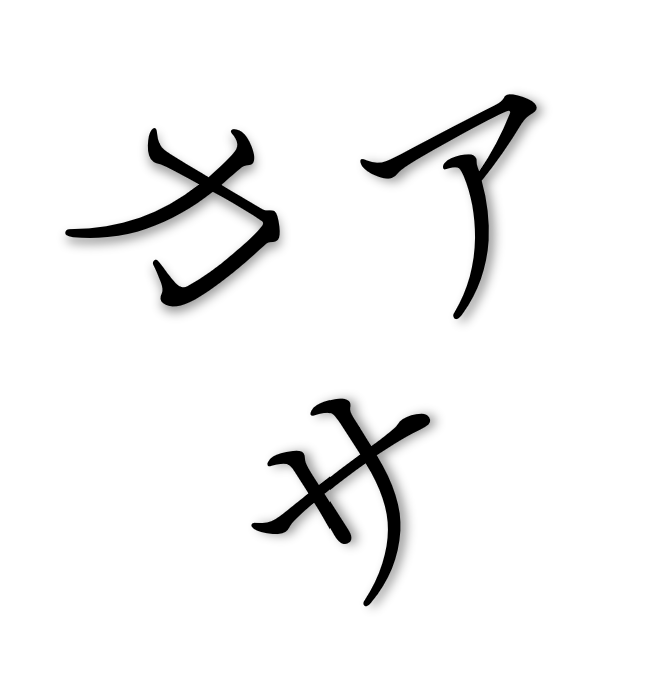

HIRAGANA.
This is the basic and most important alphabet to know. Every Japanese learning program will ALWAYS request from students to learn this alphabet as soon as possible.

KATAKANA.
The second alphabet taught to students. Though not exclusive, it is mostly used for foreign words that made their way into the language.
KANJI.
Or Chinese characters. Those are the meat of the written language. You won't absorb any essence from any text without the knowledge of them. Kanji are for many the reason why Japanese remains foreign for many.

ROMAJI.
Or roman characters. Mostly used for people names, city names, train stations, etc. for international purposes.